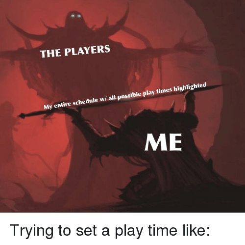
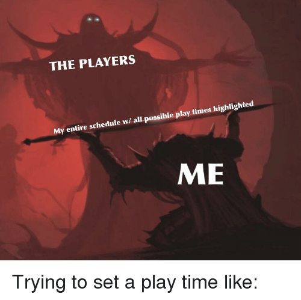

Intro
This page is designed to present bits and bobs to help you figure out if Tabletop RPGs are for you...
There are several different Tabletop RPGs to pick from. from Lovecraftian Mythos, Werewolves, Vampires, Superheroes and Villians, Western... the genres go on and on. One of the more popular roleplaying games is Dungeons & Dragons. Dungeons & Dragons is a fantasy tabletop role-playing game originally designed by Gary Gygax and Dave Arneson. It was first published in 1974 by Tactical Studies Rules, Inc. New editions of the game have since been published by Wizards of the Coast (1997 onward). It is currently in 5th edition (5e)

Not sure RPGs are for you?
Geek and Sundry is commercial YouTube channel and multimedia production hub that focuses on brodcasting tabletop RPGs, boardgames, card games and other beautiful nerdy shenanigans. I particularly enjoy Critical Role; in which a group of professional voice actors gather and play Dungeons & Dragons. Before you delve in and invest a pretty penny into the hobby; watch along on various campaigns and see if any system piques your interest...
Interested, but having trouble finding a group...
yeah it can be a tough go... but with Roll20 you can meet and play online in a virtual tabletop with people all over the world! The forums have looking for group boards, campaign workshops, and discussion boards about everything you can think of


 
